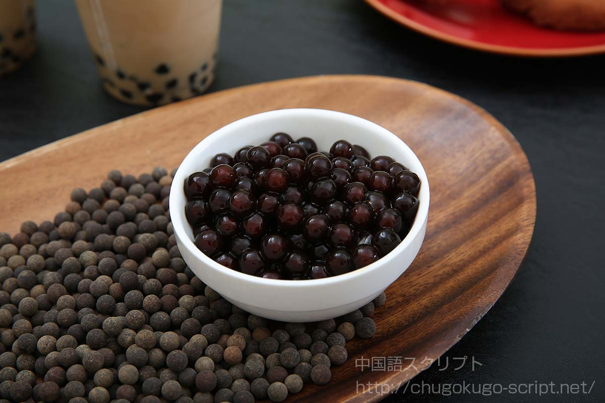
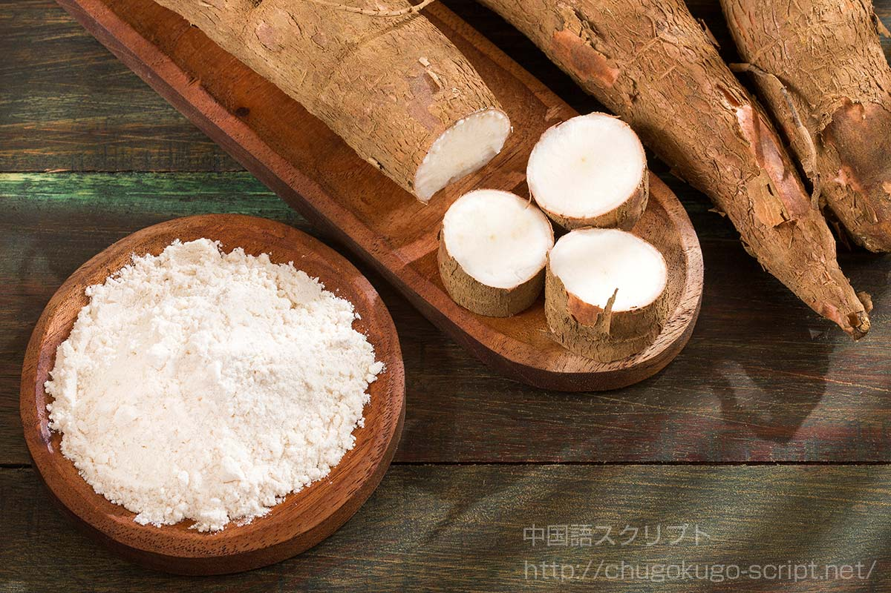

タピオカの世界
タピオカとは、キャッサバという芋の根を原料として作られたデンプンのことです。 タピオカミルクティーが有名なため、タピオカというと黒い球体のイメージがありますが、 上の写真のように、デンプンとして加工した段階では黒い球体にはなっていません。 この粉状態のタピオカを球体にしたものをタピオカパールと言います。タピオカミルクティーに入っている のはカラメルなどで色を付け、黒くしたタピオカパールです。
キャッサバは熱帯途上国約5億人の主食だそうで 、根にあるデンプンから作ったタピオカ粉を利用してパンにしたり、煮物にして食べます。 ただキャッサバには青酸配糖体という毒があって、十分な下処理をしないと食べられません。 キャッサバのデンプンのことをタピオカというのは、これを主食とするブラジル原住民の言葉から来ているそうで、 この名前のかわいらしさもブームの一因ではないでしょうか？キャッサバティーでは今ひとつ人気は出なかったような。 タピオカの見た目と相まってその響きも「カワイイ！」ということで人気が出たのかもしれません。
